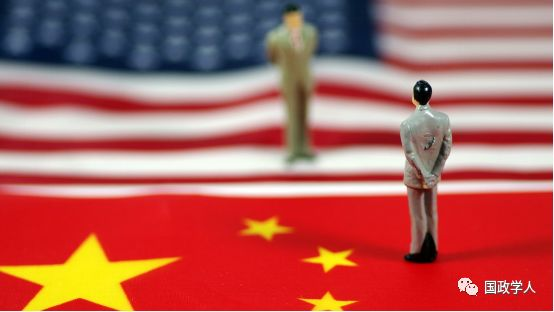

收录于合集

简 介
【作者】 包善良，中共中央党校国际战略研究院博士研究生
【编辑】 扎西旺姆
** 【审核】** 陈成龙、高嘉琳
【期刊】 《国际关系研究》2018年第4期，第56-76页。
内容提要
中美贸易争端是特朗普执政以来中美关系向负面化发展的重要标志。从时间轴上看， 中美两国争端在经历酝酿期、试探期、反复期和升级期 4个阶段的发展，最终由互征关税措施的落地而导致贸易战正式打响。综合分析来看， “美国优先”战略的实施、对华产业规则与产业升级的不满和担忧、美国对华战略趋于消极以及国内选举因素的考量是导致中美贸易争端持续恶化的主要动因。短期来看争端解决的难度较大，而美国对华制裁手段多样化、集中打压中国高科技领域发展将成为中美贸易争端未来的发展趋势。
【关键词】中美贸易争端；美国对华战略；中美关系；美国优先

正文
特朗普自2016年竞选美国总统以来，在对华贸易层面一直持强硬态度，在其竞选演讲、国家安全战略报告等官方文件中，多次指责中国通过操纵汇率、不正当竞争等方式损害美国利益并不满中美间巨额贸易逆差。特朗普上台执政后奉行“美国优先”的国家战略，以本土利益优先，强调重振美国经济，增加国内就业，同时将中国视破坏美国繁荣的主要竞争对手。在中美实力差距缩小、美国各界对华认识趋向负面、政治精英阶层对华强硬成为主流的大背景下，特朗普开始着手扭转中美贸易间“不平衡”、“不对等”、“不公平”的问题，中美贸易争端不可避免。本文试图通过梳理此次中美贸易争端的演进过程，整体把握贸易争端的走势，并通过分析引起贸易争端的动因，深究中美贸易争端发生的结构性矛盾，在解析美国政策文件、中美经贸具体案例的基础上评估中美贸易争端的发展趋势。
1
** ** 中美贸易争端的演进过程
此次中美贸易争端呈现出与之前中美贸易摩擦不同的新特点:争端规模由单一、偶发事件向全面、频发事件转变，争议领域由货服贸易向投资准入、高科技产业扩展，矛盾焦点由单纯的贸易问题向复杂的结构制度问题发展，博弈范围由贸易政策的战术层面向国家发展的战略层面延伸。整个争端演进过程阶段性特点突出，争端烈度逐渐加大，在中美经贸博弈的背后体现出国家战略意志的较量。
第一阶段:美方酝酿期。2017年8月18日特朗普签署总统备忘录，授意美国贸易代表办公室对中国发起“301调查”，旨在调查中国在技术转让、知识产权、创新等领域是否存在歧视性或不合理政策，对美国商业造成负担或限制，此举可视为中美贸易争端的肇始。随后在11月30日，美国正式拒绝中国根据《中国加入世界贸易组织议定书》第15条获得“市场经济地位”的要求，以此为据对中国多项产品展开反倾销调查。2018年1月，特朗普政府根据《1974年贸易法》第201条款，宣布“对进口大型洗衣机和光伏产品分别采取为期4年和3年的全球保障措施，并分别征收最高税率达30%和50%的关税”。进入2月，美国接连采用贸易救济措施，对进口中国的铸铁污水管道配件征收109.95%、铝箔产品征收48.64%~106.09%的反倾销税。在这个阶段，特朗普政府对华发起的贸易摩擦规模较小，种类单一，采用反倾销、反补贴等防守型贸易保护主义政策;同时启动自世界贸易组织成立后美国很少使用的“301”措施对华展开调查，显示出特朗普政府正在酝酿更加突出双边性和进攻性的对华贸易战略。
第二阶段:双方试探期。作为美国全球贸易战略转向的表现，2018年3月8日，特朗普签署公告，根据“232调查”结果，以维护国家安全的名义对进口钢铁和铝产品分别征收25%和10%的关税。紧接着于3月22日，根据“对华301调查”报告，发布总统备忘录将从限制中国企业对美投资并购、对中国商品大规模征收关税、向世界贸易组织提起诉讼三方面对华进行贸易制裁。3月26日，中方根据《保障措施协定》在世贸组织向美方提出贸易补偿磋商请求，美方拒绝答复。34月2日，中方对原产于美国的7类128项，约30亿美元产品加征15%或25%的关税，以平衡美方“232措施”对中方造成的利益损失。4月3日，美国贸易代表办公室公布“对华301调查”征税建议清单，涉及包括《中国制造2025》计划中的信息和通信技术、航天航空、机器人、医药和机械等行业价值500亿美元产品。4月4日，中国商务部发布公告，宣布将对原产于美国的大豆等农产品、汽车、化工品和飞机等进口商品对等采取加征25%关税，涉及金额约500亿美元。由此，双方你来我往，形成中美贸易正面对抗的局面。在使用关税手段的同时，4月16日，美国宣布对中国第二大电信设备制造商中兴通讯(ZTE)采取出口管制措施，禁止美国供应商在7年内与中兴开展任何业务往来，标志着中美贸易领域的争端向高新技术产业延伸。在这个阶段，美国依据国内贸易法案对华实施全面的贸易制裁措施，政策密集出台，涉及产品种类较多，数额巨大，单边贸易保护主义政策占据主导，加征关税、限制投资和商业禁令等方式的使用加大了对华贸易制裁的力度。中国因应美国制裁的反制措施强调同等规模和同等力度，同时主张维护多边贸易体制，将美方行为诉诸世贸组织争端解决机制。此外，双方在试探对方底线的过程中，保留各自政策灵活性，协商对话和准备谈判在中美政策宣示中反复出现，为下阶段中美贸易谈判奠定基础。
第三阶段:谈判反复期。在中美经过一系列经贸博弈和政策试探后，谈判成为协调双方利益诉求的必要手段。2018年5月3~4日，中美首轮经贸磋商在北京举行，美国财政部长姆努钦(Steven Mnuchin)率团来华，与国务院副总理刘鹤就中美经贸部分问题达成共识，双方同意继续就有关问题保持密切沟通，并建立相应工作机制。首轮谈判成果不多，但选择磋商手段已释放出两国试图解决经贸问题的积极信号，工作机制的建立为后续谈判创造条件。5月20日，中美第二轮经贸磋商在华盛顿举行并发表联合声明称，双方同意将采取有效措施实质性减少美国对华货物贸易逆差，中方将大量增加自美国购买商品和服务;在知识产权保护、鼓励双向投资和保持高层沟通等方面达成共识。双方代表对媒体表示，暂停“贸易战”，停止互相加征关税。至此，中美贸易谈判取得重大进展，理性解决贸易争端的框架初步建立。但是，美国各界认为“联合声明”内容空洞，表述模糊，执行困难，未能解决美国诉求。《纽约时报》、《华盛顿邮报》等美国主流媒体，发表文章认为“中国赢得了特朗普的贸易战”，政府官员、国会议员纷纷表态不满意谈判结果。5月29日，特朗普宣布将继续推进对中国商品征收关税的计划，同时限制中国对美国敏感领域的投资并加强对美国高科技产品的出口控制。在特朗普谈判团队立场发生变化后，6月3日在北京举行的第三轮中美贸易谈判无果而终，会后中美未发表联合声明。在这个阶段，中美历经三轮经贸磋商，在缓和局势、推动协商解决贸易争端方面取得了一定进展，但美国国内对阶段性谈判结果认可度不高，以及特朗普政府谈判立场的改变，使得两国谈判进程陷入停滞，谈判结果出现倒退。特别是特朗普继续推进对华征税计划，加剧两国贸易争端的升级。
第四阶段:争端升级期。随着中美贸易谈判的搁置以及美方关税制裁清单的出台，中美贸易争端短期内快速升级。6月15日，美国白宫发布修改后的对华征税清单，第一部分价值340亿美元的商品加征关税于7月6日实施，第二部分主要包括《中国制造2025》政策中受益产品，价值约为160亿美元，将在完成相关程序后公布征税时间(8月7日正式征税，笔者注)。6月16日，中国出台对等征税措施。局势持续紧张，18日白宫发表声明称，特朗普指示美国贸易代表对价值2000亿美元的中国商品征收10%的额外关税，并威胁中国如果实施报复措施，将再加征2000亿美元商品的关税。中国商务部称，“针对美方这种极限施压和讹诈的做法，中方将不得不采取数量型和质量型相结合的综合措施，做出强有力反制”。 7月6日随着关税政策的落地，中美贸易战正式爆发。7月11日，美国公布对原产于中国的2000亿美元商品加征关税的清单，至此中美贸易争端达到顶峰。在这个阶段，随着美国征税清单的出台，中国被动作出对等反制措施，整个过程既是中美贸易争端第二阶段的延续，又体现出双方在征税目标、实施步骤方面的调整。同时，美方将关税手段推向极致的做法加剧贸易争端的恶化，虽然中美局部贸易战已经爆发，但局势仍处在可控范围内，双方进入深度博弈阶段。
**2
** 美国发动中美贸易争端的动因
特朗普政府发起本次贸易争端，既是美国对外贸易政策转型的表现，也体现出对中国经贸规则不满、产业升级的担忧。美国对华战略的负面化发展客观上加剧了中美贸易摩擦的程度，同时借助对华强硬助力竞选也是特朗普考虑的因素。
( 一)美国对外贸易政策转型是引发中美贸易争端的政策起源
一方面，特朗普政府高度关注贸易赤字问题。特朗普执政以来，一改凯恩斯主义的财政赤字和货币刺激的经济治理模式，反对美国近年来经济复苏迟缓是“新常态”的说法，认为经济萎靡不振是长期结构性问题，批评奥巴马政府税率过高、监管过度和贸易逆差对GDP增长的拖累，由此造成美国国内经济增长缓慢、就业岗位减少和公共债务上升等一系列社会经济问题。特朗普的经济政策团队在2016年9月发布的评估报告称，只有通过根本的结构性改革才能实现提高美国经济增长率、创造更多就业岗位并增加收入和税收的目标，而对内增加美国本土投资、对外减少国际贸易逆差则是提升GDP增长率的主要途径，这勾勒出特朗普经济计划的施政方向。报告认为贸易逆差对经济增长至关重要，指责前任政府未能有效处理由汇率操纵、重商主义和不公平贸易协议所造成的巨额贸易逆差，特别是希拉里·克林顿担任国务卿期间签订的美韩贸易协定，造成美国损失95000个就业岗位、与韩国的贸易逆差3年内几乎翻番的糟糕协议(horrible deals)备受争议。由此，时任报告撰写人的彼得·纳瓦罗(Peter Navarro)和威尔伯·罗斯(Wilbur Ross)主张改变漠视贸易逆差持续扩大的态度，采取对“汇率操纵国家”实施反补贴关税、向“重商主义和贸易欺诈”国家加征关税、与相关国家重签贸易协定等强硬方式减少贸易逆差。从特朗普执政后于2017年7月宣布重谈“美韩自由贸易协定”，8月重启“北美自由贸易协定”(NFATA)谈判，2018年3月发动并扩大与中国的关税摩擦、对欧日加征钢铝关税等进攻性贸易政策来看，贸易制裁覆盖了占美国贸易逆差总额50%以上的主要国家，尤其是中国作为对美贸易逆差最大的国家，在特朗普对外贸易政策转型的大背景下，美国对华贸易政策的调整不可避免。
另一方面，奉行“美国优先”的国家战略。所谓“美国优先”就是谨慎地使用美国的权力资源，将其集中于美国国内，更多关注美国自身的利益。这也就意味着美国将以国内政治逻辑为基础审视美国的对外行为，更多采用单边主义政策维护本国利益，而在国际贸易领域则表现为贸易保护主义。特朗普将“美国优先”作为施政纲领，对美国内政外交政策作出显著调整。在政策制定方面，特朗普在2017年1月的总统就职演说时表示，“美国优先”战略致力于增加资本回流、重振美国制造业、提高国内就业、推动美国经济增长。在对外经贸方面，以扭转巨额贸易逆差、消除贸易不平衡、改变美国受到的“不对等”“不公平”待遇为目标。2017年1月美国退出《跨太平伙伴关系协定》(TPP)，以迎合“反自由贸易”的国内思潮，改善美国制造业“空心化”趋势。3月，特朗普签署两项行政命令，要求美国商务部与贸易代表办公室对贸易逆差问题展开全面调查，加强执法，惩罚违反“公平贸易”规则的国家。6月，以保障能源产业就业岗位为由退出《巴黎协定》。可见，实现美国利益最大化，维护美国本土利益成为“美国优先”政策的根本宗旨，而单边主义、贸易保护主义逐渐成为美国处理国际经贸问题的主要原则。在对华政策方面，特朗普竞选之初就指责中国通过操纵汇率、不公平、不对等的竞争造成美国巨大贸易逆差，抢走美国人的工作岗位。如今美国绕开世界贸易组织多边贸易争端处理机制，依据“301”、“232”等国内贸易法案对华单边实施高额关税惩罚，由此而引发的中美贸易争端，延续了特朗普执政以来遵循“美国优先”战略而实施的贸易保护主义政策，体现出该战略所蕴含的零和博弈性质。
( 二)美国不满中国产业规则和担心中国产业升级威胁美国地位是中美贸易争端的直接原因
美国挑起中美贸易争端的主要依据是“对华301调查”报告，报告认为中国政府在有关技术转让、知识产权及创新的政策措施对美国商业经营造成歧视和限制，主要针对目标便是中国的产业规则和产业目标。一方面，美国不满中国现有的竞争规则和经济体制。一是不满中国使用各种非商业手段来强迫美国企业转让技术，造成不公平的竞争环境。二是指责中国通过技术许可条件，剥夺美国技术所有者就技术转让进行谈判并达成市场化条件的能力。三是认为中国公司为获得先进技术和知识产权，对美国公司及其资产进行投资和收购。四是谴责中国对美国公司计算机网络的非法入侵，窃取知识产权和商业秘密。总之，报告认为中国的政策、规则和行为存在“不合理”和“歧视性”，削弱了美国公司的知识产权及其全球竞争力，阻碍了其对创新的投资，限制了美国商业和工业的发展，对美国竞争力和经济发展构成了严重威胁。据此，美国以征收关税相胁迫要求中国在产业规则方面进行改革，力图扩大中国市场准入制度，为美国企业营造更加“公平”、“平等”营商环境，以确保美国企业继续在华获取高额经济利润。
另一方面，美国担心中国产业升级威胁美国领导地位。《中国制造2025》计划被美国视为中国欲通过产业升级，挤占全球价值链上游份额的战略规划，此举将对美国在高端产业的领导地位造成威胁，因而引起美国的深层忧虑。“301调查”报告认为，“中国政府的政策目标是利用《中国制造2025》计划，通过获取和吸收国外技术以促进自主创新，取代外国竞争者，获得全球市场主导地位”。白宫撰文称，《中国制造2025》政策倡议，旨在从外国人手中夺走国内和国际市场份额，所有政党、美国商界和世界各地的工人都对中国的行为感到担忧。因此，在对500亿美元中国产品的征税清单中，航空、铁路、新能源汽车和高科技产品等与《中国制造2025》计划相关的产品成为主要征税目标。虽然该计划中很多产品目前并未与美国同类产品形成竞争关系，甚至还未投放市场，但此举可视为美国在高端产业领域预防中国挑战的战略性布局，其护持美国科技产业垄断地位、抑制中国产业升级的用意十分明显。
( 三)美国对华战略向消极面发展是中美贸易争端加剧的深层原因
第一，美国战略界对华认识持续趋向负面。自2008年金融危机以来，中国国力不降反升，2010年超越日本成为世界第二大经济体并保持高速增长，快速缩小与美国的差距，而中国积极有为的外交政策和对社会主义道路自信的增强，使得美国战略界对华认识开始向消极面发展。批评中国日渐“强硬”、批判对华“接触”战略的声音渐起，2015年美国智库掀起大范围的对华战略讨论，对华质疑进一步加深。明显标志是2015年3月美国权威智库外交学会发布报告认为，中国将是美国未来首要竞争者，应该实质性改变对华接触战略，加强对华的平衡和牵制……报告中提出的重振美国经济，减少技术转让，增加对中国商品征税，反对中国提出或建立的国际机制等措施建议，部分已经成为特朗普政府目前的内外政策和对华战略。尽管美国战略界中的强硬派、顺应派和维持现行政策派在对华战略的手段选择上有分歧，但正如克林顿政府国家安全事务助理、著名中美关系专家何汉理(Harry Harding)所说:“目前美国各界都认为对华接触政策是失败的，支持对华采取更强硬政策的论据很充分。”1特朗普政府上台后，2017年12月美国国家民主基金会(National Endowment for Democracy)又提出以“锐实力”(sharp power)为特点的“新中国威胁论”，认为中国正利用财富、技术、人文交流和巨型市场等手段，对西方世界进行“影响力渗透”，以挑战美国主导的自由主义国际秩序。可见，美国战略界对华认识的负面化发展，为特朗普制定强硬对华贸易政策提供了理论基础，而美国政治文化中的“旋转门”制度和智库在政策制定中的特殊作用又加剧了对华认识负面化向对华政策强硬化发展的趋势。
第二，美国将中国定位为战略竞争对手。美国战略界在对华认识趋向负面的同时，官方对华战略的表述也由“接触为主”向“竞争为主”转变。最典型的是2017年12月出台的《美国国家安全战略》报告，从官方层面否定了自尼克松以来的“对华接触战略”，认为“与中国接触以及将其纳入国际机构和全球贸易，促使其成为良性的参与者和可信赖的合作伙伴，这个美国对华政策的前提假设是错误的”。同时，报告将中国定义为对美国威胁最大的“修正主义势力”，大篇幅、多领域渲染中国的各种“威胁”，强调中国“挑战美国的实力、影响力和利益，企图侵蚀美国的安全和繁荣”，中国被描述成影响美国国家安全“最主要威胁”和“全领域”的竞争对手。由克林顿、小布什、奥巴马时期对中国定位的“战略伙伴”、“负责任的利益攸关方”、“合作伙伴”，到特朗普政府的头号“竞争者”，是中美关系中对抗成分持续增加，接触成分逐渐减少的发展结果。由于“解决贸易不平衡、打破贸易壁垒、应对扭曲市场的不公平贸易行为”是特朗普对华贸易政策的主要方面，加之竞争因素在中美关系中比重的提升，意味着中美在贸易领域的摩擦成为常态，而特朗普信奉大国博弈、零和思维主导的现实主义政策则使中美贸易争端加剧的可能性上升。
第三，美国政治精英阶层对华强硬成为主流。中国崛起带来的“结构压力”使得美国政治精英阶层对华强硬成为主流。一方面，特朗普政府中对华“鹰派”官员占据多数，主张对华强硬。主导贸易政策的美国贸易代表罗伯特·莱特希泽(Robert Lighthizer)是“对华301调查”报告的负责人，20世纪80年代曾任里根政府时期美国贸易副代表，是强硬的贸易现实主义者，参与过20多个关于钢铁、汽车和农产品的国际协议谈判。莱特希泽在2017年9月的演讲中就提到，“中国存在强迫技术转让、国企补贴、扭曲市场等行为，对世界贸易体系造成重大威胁，而当前的WTO相关准则无法解决中国大规模的重商主义，需要寻找其他途径以保护美国的利益”。这些主张与“对华301调查”报告内容以及相关制裁措施一脉相承。同样，白宫国家贸易委员会主任彼得·纳瓦罗作为非主流经济学者，是典型的贸易保护主义者，他强烈要求降低美国贸易逆差，重振美国制造业，提高关税水平，促使全球产业链回流美国，反对《北美自由贸易协定》和《跨太平洋伙伴关系协定》，著有多本鼓吹“中国威胁论”的专著。他在转任白宫贸易与制造业政策办公室(White House Office of Trade and Manufacturing Policy，OTMP)主任后，发布首份报告即指责中国发动经济侵略威胁美国及全球的技术和知识产权，与“对华301调查”报告遥相呼应。强硬势力在美国对华贸易政策的制定和执行层面占据主导地位，对中美贸易争端向负面发展的消极作用不可忽视。
另一方面，政府、国会和两党在涉华议题上立场接近。对华强硬逐渐成为新的“政治正确”，一种以地缘政治和国家安全为基础的对华制衡战略成为两党的共识。2017年8月两位前民主党高官联合在《外交》杂志发表文章罕见地称赞共和党总统特朗普的对华政策，称特朗普在《美国国家安全战略》报告中对华战略的质疑和反思是“正确的一步”……美国面临着现代史上最具活力最强大的对手(中国)。美国国会在2017年年底通过的《2018财年国防授权法》中，包含“美台军舰互停”内容。2018年1月，众议院通过了“台湾旅行法”(Taiwan Travel Act)草案，旨在解禁“台美官员全级别之间交流”的限制。频繁利用“台湾问题”作为对华制衡的手段凸显美国国会对特朗普定义中美之间竞争关系的积极回应。国会与白宫在对华立场上的差异在缩小，共性在增加，对华强硬成为两者共同的政策目标。美国参议院6月18日投票通过《国防授权法》(NDAA)修正案，否决美国商务部与中国中兴通讯的和解方案，反映出国会对政府未能尽全力应对中国威胁的一种批评和纠偏行为，可见两者的分歧不在于是否对华强硬，而在于对华政策强硬的程度。
( 四)兑现竞选承诺和选举政治的需要是特朗普挑起中美贸易争端的现实考量
鉴于特朗普2016年总统竞选获胜主要是得益于产业工人、农民和白人蓝领阶层的支持，这与其反建制、代表本土主义的竞选主张有很大关系。在特朗普政府奉行建立在国内政治逻辑基础上的经济民族主义对华政策框架下，中国被塑造成破坏美国经济、减少美国就业岗位、“让美国吃亏”的罪魁祸首。随着特朗普与支持群体相互依赖的加深，进而形成一种政治联盟，该联盟的利益诉求已经成为特朗普政府内政和外交政策制定的首要甚至决定性变量，减少贸易逆差、推动制造业回流美国、改变中美间不平衡、不公平的贸易现状等对华强硬贸易政策成为特朗普兑现竞选承诺，巩固其政治基础的必然选择。同时，面对2018年11月的国会中期改选和2020年总统大选，对于致力于连任的特朗普来说，此次选举至关重要，尤其是面对民主党在参议院和众议院选情稍占优势的情况下，保住共和党对参众两院的控制是确保特朗普竞选连任和未来施政的关键。凝聚现有政治联盟的向心力，特别是巩固“铁锈地带”传统制造业地区的选票，需要特朗普政府对中国的“不公平”贸易行为作出惩罚，以“为民争利”的姿态来吸引“民族主义”、“本土主义”和“民粹主义”选民的支持。而民主党则寻找机会攻击特朗普对华政策软弱以分流共和党选票的努力，又促使特朗普将持续保持对华强硬政策。同时，为了实现“让美国持续伟大”的2020年总统竞选口号，特朗普势必将中国塑造成阻碍美国持续繁荣的最大威胁，以积聚国内各方力量一致对外，从而达到哄抬选情的目的，这也符合美国外交传统中“寻找战略对手，解除目标缺失的困境”。
**3
** 中美贸易争端发展趋势
中美贸易争端的由来在本质上是中美实力接近、两国制度不同、价值观相异而导致的美国对华战略偏向消极的外在体现，是中美结构性矛盾发展的结果。随着美国全球战略调整、对华意图误判的加深，中美贸易争端短期内难以解决。同时美国将根据自身国家利益综合运用单边、多边政策对华实施制裁，而高科技领域将成为中美争端的主战场。
( 一)中美贸易争端向长期化发展
首先，美国全球战略调整周期较长。自特朗普提出“美国优先”国家战略以来，美国对外政策逐渐向本土化、内倾化发展，对外贸易中单边主义和贸易保护主义倾向突出。美国在6月1日向包括欧盟、加拿大、日本、墨西哥等盟友、邻国和其他国家征收钢铝关税后，又在6月22日威胁对欧盟国家进口汽车征收20%关税。特朗普2018年1月在达沃斯论坛中鼓吹“美国优先”，又在6月9日否定G7峰会联合公报。美国频繁依据国内法案对其他国家实施贸易制裁而代替世界贸易组织贸易争端处理机制，大力推销其“美国优先”战略而无视多边贸易规则。在全球层面，美国退出《跨太平洋伙伴关系协定》，搁置《跨大西洋贸易与投资伙伴关系协定》(TTIP)等区域和多边协定，接连退出《巴黎协定》、联合国教科文组织、联合国人权组织等全球治理机制，特朗普甚至声称在“必要时可以退出世界贸易组织”。美国此番全球战略调整不仅是美国经济民族主义政策的延伸，更是美国竭力想要改变双边和多边自由贸易规则，让美国和世界主要经济体的经贸关系重新洗牌，以打造美国利益和目标优先条件下世界贸易制度的新格局。
但是，在全球产业链高度融合，多边经贸体制惠及世界大多数国家的当今社会，美国谋求改变多边贸易规则的行为遭到多国的抵制。中国、欧盟、印度、墨西哥等国相继利用世界贸易组织贸易争端机制对美国提出诉讼，欧盟、加拿大以征收同等规模关税的形式进行反制，中美局部贸易战的爆发反映出中国维护国际多边贸易体制的决心和行动。因此，短期内特朗普全球战略调整到位的难度较大，中美经贸博弈将长期存在。其次，中美各自期望目标差距较大。中美贸易争端发展至今，两国进行过三轮谈判试图解决争端，但由于各自谈判目标差距较大，达成共识尚需时日。一是缩减贸易逆差的目标相异。美方希望中国在两年内缩减2000亿美元的贸易逆差，中方表示将通过大量进口美国产品以“实质性”减少中美贸易逆差，同时提高本国经济发展质量，但不设置具体数额。二是变革产业规则的力度和程度不同。美方要求中国短期内修改知识产权相关法律，废除强制技术转让等歧视性规则，放宽外资投资限制，扩大市场准入，取消国有企业补贴，改变扭曲市场的行为。
中方表示将在服务业特别是金融业方面大幅度放宽市场准入，加强同国际经贸规则对接，增强透明度，加强知识产权保护，但是中国会按照自身节奏推动改革开放和发展现代经济体系。三是与中国产业升级计划相矛盾。美国利用征税以及限制中资对美国企业投资等手段，要求中国放弃国家主导的《中国制造2025》计划以及对相关高科技产业的补贴和政府支持行为。而《中国制造2025》是中国实施制造强国战略第一个10年的行动纲领，是促进产业转型升级、全面提高发展质量和核心竞争力、实现中国成为制造业强国的国家战略。综合以上三点，分别涉及两国直接经济利益、国内产业规则以及国家长远战略，尤其是后两点触及中美结构性矛盾，双方妥协的空间较小，而美国利用贸易战延缓中国高科技产业发展需要一个长期过程。
最后，否定中国市场经济地位。根据中国2001年加入世界贸易组织时的相关文件，2016年12月10日后中国将自动获得市场经济国家地位。但是，美欧日等发达国家不承认此条款生效，2017年10月美国商务部发布《关于中国非市场经济地位备忘录》，认为中国的制度结构以及政府借此结构所进行的控制，造成了根本性的经济扭曲，使非市场条件在中国经济中占据了主导地位，认定中国为非市场经济国家。可见，中美在“制度结构”层面的摩擦在“贸易战”前已显端倪。一个国家一旦被贴上“非市场经济”标签，将意味着其他贸易伙伴可以在对该国的反倾销调查中使用“替代国”做法，对这个国家征收高额关税。正如前文所述美国以“反倾销”为名，对中国商品征收高关税的贸易摩擦近年来频繁发生。总体来看，中国输美商品集中在服装、工业初级产品和家电等劳动密集型产品，由于全球产业链分工优势和美国制造业空心化的现实，价廉质优的中国产品很容易被冠以“倾销”名义进行调查，而对中国非市场经济国家的认定又提升了美国对中国产品征收惩罚性关税的几率。在美国对华接触战略向竞争战略转变的大环境下，体制性矛盾所引发的中美贸易摩擦频率渐高，同时“反倾销”调查也可成为美国实现对华政治和战略目标的筹码，中美贸易争端将会呈现常态化。
( 二)美国对华制裁手段将更加多样化
首先，关税政策接近极限且遭到美国国内反对。截至7月11日，美国对华关税惩罚措施已涉及2500多亿美元的中国商品，接近2017年美国自华进口货物总量(5050亿美元)的一半。特朗普甚至向记者表示，他最终不介意对从中国进口的全部5000亿美元商品加征关税。关税措施的极限化使用，使得美国政策弹性和转圜空间缩小;同时征税范围涉及6031项产品，几乎涵盖农业、纺织业和制造业等所有领域，引起美国各界的强烈反对。美国部分高科技产业协会、美国商会、美国零售联合会等美国商业团体，认为征收关税是对中国歧视性和破坏性贸易行为的错误回应，只会将中国“不公平贸易”行为的成本加在美国消费者、制造商、农民和牧场主的身上。
彼得森国际经济研究所发布报告称，关税条款会对美国制造业构成实质伤害，使美国生产厂商处于不利地位。特朗普的大规模征税举措也遭到共和党权威人士的批评，参议院财政委员会主席奥林·哈奇(Orrin Hatch)在一份声明中表示:“我一直支持特朗普政府打击中国技术转让制度的针对性举措，但今晚的声明(2000亿美元征税计划，笔者注)无益于保持美国经济的长期健康和繁荣。”由参议院外交委员会共和党籍主席科克(Bob Corker)发起的，旨在限制总统以国家安全为由加征关税的提案于7月11日在参议院高票通过，虽然该提案不具有强制约束力，但反映出两党议员对特朗普滥用总统权力的担忧以及限制关税措施继续升级的态度。随着加征关税副作用的逐渐显现以及国内反对征税压力的增大，特朗普关税制裁措施的效果和持久性成疑。
其次，强化美国外国投资委员会职能。美国外国投资委员会(Committee on Foreign Investment in the United States，CFIUS)由福特总统在1975年创立，是负责审查外国公司对美投资、合并和收购交易的跨部门机构，由财政部长担任主席。中国历来是美国外国投资委员会投资审查的重点关注对象，由美国外国投资委员会建议、美国总统以国家安全为由禁止的交易大都与中国有关。2018年6月27日特朗普发表声明称，将通过国会立法，即《外国投资风险审查现代化法案》(FIRRMA)，更新保护美国关键技术的“现代化工具”，以解决“301调查”报告中确定的“国家导向”的先进技术投资问题，防止美国的核心技术遭到“外国掠夺性的收购”。此举标志着美国对华投资领域的制裁措施正式确定。从形式上看，以国会立法的形式，使得投资审查制度在制度化、标准化和规范化方面更趋完善，为美国外国投资委员会执法提供法理依据;同时限制总统自由裁量权的滥用，重视各专业机构、政府相关部门的专业意见，发挥跨机构审查优势，便于收集中国“强制技术转移的证据”。
从内容上看，扩大了美国外国投资委员会的管辖权限，增加了对涉及国家安全领域的审查力度，包括少数股权投资、建立合资企业和美国军事基地附近的房地产交易等方面。“虽然中国没有被提及，但该法案的发起者并不羞于讨论立法的主要目标”。从目的上看，改革强化美国外国投资委员会的职能并与“301调查”挂钩，可以弥补关税措施对美国自身的伤害，做到对华制裁更加精确，代价更小，效率更高，有效降低强制技术转移对美国关键技术领域领导地位的威胁。美国国际战略研究中心中国研究主管斯科特·肯尼迪表示，重视美国外国投资委员会作用的决定是一个务实的举措，《外国投资风险审查现代化法案》“将阻碍中国在高科技领域向价值链上游移动的努力”。随着特朗普于8月13日签署国会投票通过的《2019财年国防预算法案》成为美国法律，作为其中一部分的《外国投资风险审查现代化法案》正式成为美国审查中企对美国“敏感产业投资、并购”的法律依据。由此可见，以“国家安全”名义加强投资领域的限制将是美国对华制裁的新方向。
再次，采取多边手段向中国施压。5月31日，美国、欧盟、日本三国贸易部长发表联合声明称，旨在维持市场导向政策和公平竞争环境，三方将采取共同行动解决扭曲市场的国有企业补贴行为，应对任何国家的强制技术转移政策。综合三方的应对方案可分为三个层次。第一层是联合行动，三方将定期讨论并制定更加严格的工业补贴规定，寻找有效措施制止有害的强制技术转让政策和做法，共同确定维持市场导向条件的手段;第二层是利用世界贸易组织贸易争端解决程序，通过诉讼、磋商和裁决等方式解决知识产权窃取、强制技术转让等纠纷;第三层是改革世界贸易组织相关规则，三方认为应该澄清和改进现行的世贸组织工业补贴规则，以防止新兴发展中国家利用漏洞规避相关规则义务。
值得注意的是，三方设定了有关修改产业补贴政策的具体议程并发起世贸组织改革的有关讨论，同时强调在G7、G20和OECD等多边论坛中合作制定解决市场扭曲的措施。7月25日美欧达成协议，在暂缓双边贸易争端的同时，再次强调通过紧密合作，“推动世界贸易组织改革，解决包括知识产权窃取、强制技术转移、产能过剩、国企扭曲等方面的不公平贸易行为”。美国联合主要发达经济体接连释放改革现有国际贸易竞争规则的信号，与“对华301调查”报告中指责中国“不合理”的产业规则如出一辙，共同针对中国的用意明确。可见，利用多边措施制衡规制中国是美国对华制裁多样化手段之一，加上之前已经启动的向世界贸易组织诉中国强制技术转移案件，采用加征关税、国内立法和国际规则等手段多管齐下制裁中国的态势已经形成。特别是美国采取“工具性制度主义”原则，为维护其在国际贸易体系中的优势地位，协调盟友关系以利用或者修改国际规则的方式从制度层面抑制中国发展，有复归美国建制派精英传统遏华手段的倾向。
( 三)重点打压中国高科技产业发展
中美贸易争端深层原因源于美国精英阶层对中国崛起的担忧，而中国在高科技领域的积极进取被认为是威胁美国未来领导地位的重要指标。莱特希泽就表示，保持美国的技术优势是“美国经济的未来”。从“对华301调查”报告中着力限制中国获取先进技术并阻滞《中国制造2025》计划实施的政策，到美国打压中国产业升级的实际做法来看，高科技领域的竞争将是中美争端的主要焦点。
首先，官方表态指向明确。美国贸易代表莱特希泽在6月15日表示，“中国政府正在积极地通过不公平贸易和工业政策(《中国制造2025》)来破坏美国的高科技产业和经济领导力，我们必须采取强有力的防御行动，以保护美国在技术和创新方面的领导能力……” 6月19日，由纳瓦罗负责的白宫贸易与制造业政策办公室发布政策报告称，中国经济的快速崛起是通过“不符合全球规范和规则”的50多种政策、行为和实践来实现的，其目的是追求两大战略目标:一是获取来自美国以及其他国家的关键技术和知识产权;二是占领高科技产业，推动未来经济发展和国防工业的进步。特别是《中国制造2025》被认为是中国试图占据产业领导地位的国家计划。报告认为，考虑到中国经济规模及对市场扭曲的政策，这种“经济侵略”不仅威胁美国经济而且损害全球创新体系。该报告可以看作是对“301调查”报告的强化和补充，跨部门协同牵制中国在高科技领域发展的政治动机明确。
同时，国会拟立法限制中国产业升级。参议员卢比奥(Marco Rubio)于5月10日向参议院提交《与中国公平贸易实施法案》草案，旨在抵制《中国制造2025》计划中的产品，禁止向中国出售涉及美国国家安全的敏感技术和知识产权，削减中国对美投资，禁止联邦政府购买华为、中兴通讯设备产品。可见，美国国内已将应对中国高端产业发展所带来的冲击上升到国家战略的层面，正如卢比奥所说:“这不止关乎贸易往来，还有地缘政治和国家安全，这将是21世纪的决定性问题。”
其次，“中兴事件”凸显美国对华在高科技领域的战略压制。中兴通讯作为中国第二、全球第四，产值达千亿级别的全球电信设备供应商，在2018年4月16日美国政府以行政命令禁止美国芯片供应商向其供货后，公司立即陷入停摆状态，这成为中美贸易战中的标志性事件。抛开事件的缘由和牵涉的法律法规不谈，从处理方式来看，事发时美国政府对中国科技公司使用行政禁令而不是经济处罚，凸显博弈思维主导政府行为，而事后和解方案中“14亿美元罚款、更换管理层和董事会、选派美方助理合规官”等条款更是超越一般贸易规则，带有明显的政治强制色彩。从事件影响来看，多位议员反对特朗普政府在中兴问题上让步，认为此问题关涉美国的执法和国家安全，众议院甚至通过法案阻止政府从轻处罚中兴;美国防部出于安全考虑将命令美国驻世界各地军事基地的商店停售中兴手机。
可见，“中兴事件”的外溢影响远超一般贸易处罚案件，对中国通信产品危害美国国家安全的担忧，折射出美国精英阶层对中国高科技产业迅速壮大的焦虑情绪。同时，特朗普政府在中美贸易战大背景下对中兴的处罚方式中夹杂着长期战略考量，其维护美国在高端技术产业领导地位的目的明显，从某种程度上“中兴事件”可以看作是中美高科技领域竞争的前哨战。
再次，调整征税清单，重点针对《中国制造2025》计划。2018年6月15日美国正式公布对华500亿产品征税清单，该清单与4月出台的清单相比在征税种类、征税方式方面作出调整。一是删除500余种技术含量较低的产品，保留包含机电、光电产品、铁道车辆及其零部件等800余种产品，该部分产品涉及340亿美元，已于7月6日开始征收25%关税;二是增加280余种“受益于中国产业政策”的产品，涉及金额160亿美元，开征关税时间未定。调整后的关税清单涵盖1100余种产品，集中打击工艺复杂、技术含量较高的中国产品，凸显美国遏制《中国制造2025》中重点产业发展的战略意图。另外，美国同时公布两份征税名单，而分批次征税的做法，一方面在于减少征税副作用对美国国内产业的冲击，利用缓冲期寻找替代产品，降低国内反征税压力;另一方面，循序渐进打压中国高科技产业发展，根据征税反馈情况适时改变政策，制定限制中国高科技产业升级的长远计划。正如美国世界大型企业联合会中国代表处负责人弗勒德所说，美国对中国在科技上的制裁或限制将会是长久的。
最后，收紧签证政策，限制中美科技人文交流。特朗普以“打击中国窃取美国知识产权”为由，收紧中国公民赴美签证政策。美国国务院指示美国驻华使领馆官员自2018年6月11日起改变以往的签证政策，缩短中国赴美人员的签证有效期限，特别是申请在机器人、航空和高科技制造等领域学习的中国研究生将被限制为一年签证;同时受到签证程序限制的还有部分赴美进行工作的研究人员，受限原因都是上述人员从事领域涉及《中国制造2025》计划。其实该政策的源头可追溯到2017年12月公布的《美国国家安全战略》报告，报告中提出美国将审查签证程序，以减少非传统情报收集者的经济盗窃行为，确保美国知识产权安全，将考虑对来自指定国家的数学、工程、科学和技术专业留学生进行限制。由此可见，特朗普通过行政手段限制中美科技交流，既是对征税、限制投资和管制出口等制裁措施的补充，又是对美国国家战略长远规划的实施。综合来看，高科技领域竞争逐渐成为中美贸易战的焦点和国家层面竞争的主要趋势。正如美国《基督教科学箴言报》文章所言，“中美目前的贸易紧张关系，是对新技术和它们给企业带来的商业优势的更深层次竞争的一部分”。从这个角度讲，贸易战深层就是技术战。因此，对中国高端产业升级计划的打压将成为美国对华长期战略的重要组成部分。
**4
** 结束语
中美贸易争端是中美结构性矛盾量变过程中的一个重要标志性事件，也是中美关系演进中的关键节点。该争端涉及两国在战略目标、经贸结构、制度规则、发展模式和产业布局等方面的诸多差异和彼此认知的不同。随着争端的深入，中美矛盾向结构层面延伸，博弈重点聚焦于未来两国在全球格局中的位置，双方争端的烈度加大、周期延长等特点逐渐显现。对于中国来说，在中美关系演变的大格局中审视中美贸易争端，可以更好地理解美国对华政策的目的，进而把握形势走向，制定因应对策。在维护中美关系稳定发展的大局下，妥善处理中美贸易争端，不仅需要在对美战略塑造、创新双方互动方式、推动机制构建和国际战略资源利用等方面作出被动改变，更需要中国国内改革的主动配合，尤其是在深化供给侧结构性改革、扩大对外开放、提升市场消费能力、推动产业升级和完善法律法规等方面主动作为，全面提升中国的综合实力，以便主动把控局势发展，发挥中国市场资源优势，通过谈判而非贸易战解决中美贸易争端。同时，还要警惕贸易战外溢效应对我国新兴产业、敏感领域的影响。
目前，在中美加大互征关税砝码、局部贸易战爆发、双边谈判陷入停滞的局面下，不能排除美国利用美元霸权、能源等不对称优势阻碍人民币国际化进程、限制中国原油期货市场、铁矿石期货市场发展的策略性行动。此外，特朗普政府借台湾问题、南海问题制造地缘政治热点以及近期与欧日达成贸易共识，以此压缩中国战略回旋空间的可能性在增大。因此，应理性看待中美关系处于矛盾多发期的客观事实，对中美贸易争端的复杂性和困难程度作出合理预期，做好应对争端升级、谈判过程反复、矛盾长期存在的思想和行动准备。
_ ** _ 本文由国政学人微信平台编辑首发**
更多阅读
【重磅速递】约瑟夫·奈：美国霸权的兴衰：从威尔逊到特朗普 | 国政学人
【重磅推荐】巴里·布赞：英国学派视角下的中国崛起 | 国政学人
【重磅速递】米尔斯海默：注定失败：自由主义国际秩序的兴衰 | 国政学人
【国际组织】IO杂志：联合国维和行动的武力运用问题研究 | 国政学人
【国际秩序】为什么自由主义国际秩序理念将美国外交政策引入歧途？| 国政学人
【关系理论】“关系”：世界政治关系理论的中国话语 | 国政学人
【百年国关】历史在国际社会中的应用：从巴黎和会到现在 | 国政学人
【英国学派】张勇进：中国与全球国际社会中的自由主义等级制：实力与对规范变迁的协商 | 国政学人
【地区秩序】论经济实力的可转化性：中国经济崛起与东亚安全秩序 | 国政学人
【中俄关系】不得已的伙伴：系统-单元动态与中俄关系 | 国政学人
【IPE研究】美国对外贸易政策的“1934年体制”是如何形成的？ | 国政学人
【现实主义】斯蒂芬·沃尔特：傲慢的终结与美国克制的新时代 | 国政学人
【理论批判】系统、层次与结构理论：沃尔兹的理论并非系统理论 | 国政学人
【外交政策】单极体系下的不和平状态与美国外交政策 | 国政学人